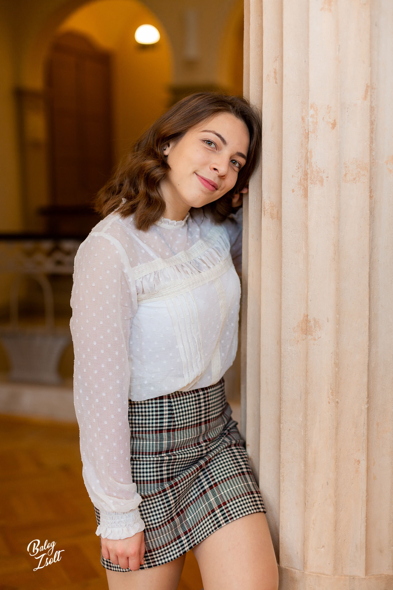

Rácz Gyopár
|

|
19 éves vagyok, és jelenleg Budapesten élek, mivel a 12 osztály elvégzése után úgy döntöttem, hogy a Budapesti Műszaki- és Gazdaságtudományi Egyetemen folytatom tanulmányaimat. Jelenleg az ipari termék és formatervező mérnöki szakon tanulok, a jövőbe pedig szeretném magam kipróbálni külföldön, egy mesteri szak keretein belül. Leginkább a belső építészet/ építészet írány vonz, ilyen kaliberű dolgok tervezése és kialakítása az, ami leginkább szenvedélyt ébreszt bennem. Gyerekorom óta a rajz fontos szerepet játszik az életembe. Részt vettem számos versenyen is, ahol jó eredményeket értem el. Számomra ez egy hobby volt, de mára már kinőtte magát ebből a státuszból, hiszen ez vált a karrierem alapjává. Mindemellett a másik dolog ami íránt szenvedéyt érzek az a szervezés. Az emberekkel való interrakció és együttműkődés, egy csoport vezetése, bizonyos rendezvények megtervezése és lebonyolítása az ami igazán képes engem erővel es motivációval feltölteni. Számos tapasztalatot szereztem a gimnáziumi éveim során a diáktanács által. Egy évig alelnök ként tevékenykedtem, ami alatt minden rendezvénynek az egyik főszervezője voltam.
|